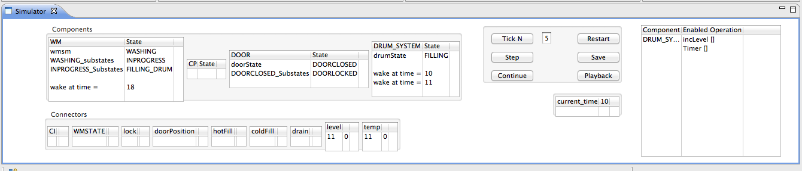
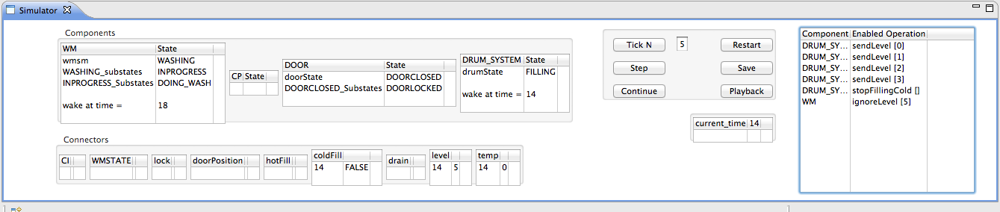
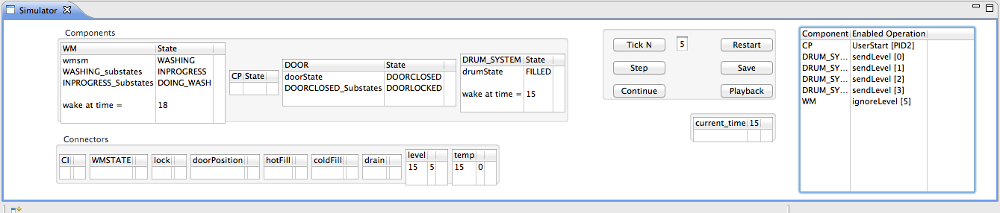
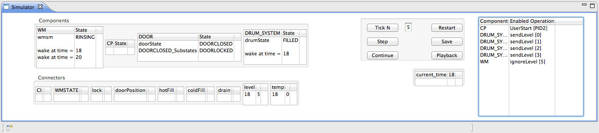

| CODA Component Diagrams User Manual |
| CODA Component Diagrams User Manual |
The CODA simulator can be used at every refinement step to establish a set of regression tests and golden results. Figure 47 illustrates the state of the system at times 10, 14, 15 and 18.
|  |
| (a) |
|  |
| (b) |
|  |
| (c) |
|  |
| (d) |
| CODA Component Diagrams User Manual |